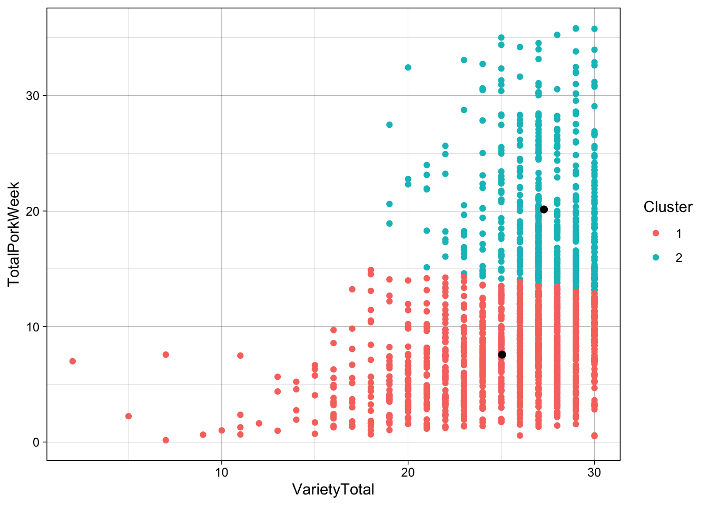

Chapter 12 TFIH Exercises
Below you will find exercises relevant for the data analysis for the project work in the Thematic course in Food Innovation and Health. Exercises are meant as a guide on what you can do with your own data obtained through the practical work on the projects.
Before you start to work on the exercises, you need to familiarize yourself with the knowledge in the introduction chapters of this book as well as the chapters written specifically of for this course.
12.1 Exercise 1: Descriptive statistics and plots
From this exercise you should be able to describe the products in terms of common, rare and differential attributes, as well as the hedonic ratings.
12.2 Exercise 2: Consumer background and PCA
From this exercise you should be able to describe who your consumers are.
12.2.1 Demographics
Age, Gender, Income and Household size is classical demographic characteristics. As the evaluation of the products is done using a specific group of people, the generalizability of the results naturally condition of the characteristics of this population.
Construct the distributions of the demographic characteristics. You can use the table() function, or maybe do it all at once using the tableone package. For inspiration, modify the code below to serve your needs.
library(data4consumerscience)
library(tableone)
data("beerdemo")
CreateTableOne(vars = c('Age','Gender'),data = beerdemo)12.2.2 PCA on Interests
Calculate a PCA model including the Variables 7 ( Interest in food ) to 12 ( Future interest in beer ). Remember to standardize/scale the variables
mdlPCA <- prcomp(beerdemo[,7:12],scale. = T)Plot the scores and loadings in a biplot and look for groupings of the consumers in the scores.
Group and color according to the background information not used in the model (Gender, Age,..)
library(ggbiplot)
ggbiplot(mdlPCA, groups = beerdemo$Gender, ellipse = T)Describe what you find.
12.3 Exercise 3: PCA on CATA counts
From this exercise you should be able to describe your samples (beers) from the CATA counts, and which attributes that occur together, as well as which attribute patterns that discriminate products.
Calculate a PCA model including all Variables and all Objects.
PCAmdl <- prcomp(beercata[,3:29], scale. = T)Plot the scores and describe the groupings of the samples.
Plot the loadings and describe the correlations between the variables.
Both of these plots are present in a biplot, but you may want to play around with the settings (such as varname.size, varname.adjust, …) to get all information out.
ggbiplot(PCAmdl, groups = beercata$Beer, ellipse = T)Use this biplot to find out which samples are described by which CATA attributes. as well as similarity of products.
12.4 Exercise 4: Cochran’s Q test on CATA binary data
In Exercise 1 the attributes characteristic for certain products, were summarized using descriptive stats and plots. Now we want to add statistical inference onto these observations.
To get started, choose a few attributes. For each attribute 1) Perform Cochran’s Q test for overall difference, and if interesting enough 2) perform a Post hoc test for product segmentation.
To get all attributes analyzed collectively, use the tidyverse code in the chapter For all attributes in one run (nice to know).
Try this procedure out on a different dataset, e.g. the tempeto data.
data("tempetofermentation")
library(RVAideMemoire)
tempetofermentation$Product2 <- factor(tempetofermentation$Product) # needs to be a factor for getting labels on results.
m <- cochran.qtest(Sour ~ Product2 | Assessor,
data = tempetofermentation)12.5 Exercise 5: Hedonic ratings and consumer characteristics
From this exercise you should be able to describe the liking of the beer samples and glimpse into consumer characteristics related to liking
12.5.1 PCA on joint data
Calculate a PCA model including all Variables and all Objects.
include_these <- complete.cases(beerliking)
PCAliking <- prcomp(beerliking[include_these,-1], scale. = T)Plot a biplot or loading plot, and use the loadings and describe the correlations between the variables (liking of beers in this case).
ggbiplot(PCAliking)Plot the scores and describe the groupings of the samples by colouring the score plot according to the consumer background variables. Note that the 160 rows in both datasets match each-other, so we can glue the demo information directly onto the liking model. If that was not the case, matching using left_join() or inner_join() would be necessary before analysis.
ggbiplot(PCAliking,groups = beerdemo$Age[include_these], ellipse = T)Any trends? For instance, how is liking related to the individual consumer diversity of beer ( Beer types/month)?
12.5.2 All demographics
… Some code to get all 7-scale demo information plots. You may want to export and view in a pdf viewer for zooming etc.
gall <- cbind(PCAliking$x[,1:2], beerdemo[include_these,]) %>%
gather(var,val,`Interest in food`:App_Vinous) %>%
ggplot(data = ., aes(PC1,PC2, color = factor(val))) +
geom_point() +
stat_ellipse() +
facet_wrap(~var)
ggsave(filename = 'anicebigfigure.pdf',gall, height = 20, width = 20)12.6 Exercise 6: PCA on CATA counts and hedonic ratings
From this exercise you should be able to conclude what attributes that overall drives the liking of products (beers).
For each beer, the collated CATA counts and the averaged liking constitutes the multivariate response matrix.
likingsum <- beerliking %>%
group_by(Beer) %>%
dplyr::summarise(lik = mean(Liking, na.rm = T))
catasum <- beercata %>%
gather(attrib,val,S_Flowers:S_Vinous ) %>%
group_by(Beer,attrib) %>%
dplyr::summarise(mn = mean(val, na.rm = T)) %>%
spread(attrib,mn)Join the two.
cata_lik <- catasum %>% left_join(likingsum, by = 'Beer')Do a PCA
PCAcata_lik <- prcomp(cata_lik[,-1],scale. = T)
ggbiplot(PCAcata_lik, labels = cata_lik$Beer)12.7 Exercise 7: Mixed modelling on hedonic ratings
In this exercise we want to model Liking as a response. We want to use the beer type as the main predictor, but take into account that the responses is repeated within consumers. The same judges have evaluated all beers. This is a mixed model
Start with a plot
ggplot(data = beerliking, aes(Beer, Liking)) +
geom_boxplot()
library(lme4)
library(lmerTest)
lik_mdl <- lmer(data = beerliking, Liking ~ Beer + (1|Consumer.ID))Evaluate this model by anova() and summary(), and interpret the result. How much within individual consumer variation is there compared to between consumer?
You should get that the beers are not equally likable. But are there maybe some which are more similar? Perform a all-pairs post hoc test and try to group beers based on liking.
library(multcomp)
summary(glht(lik_mdl, linfct = mcp(Beer = "Tukey")),
test = adjusted("fdr"))Try to add consumer demographics and interest to the model to evaluate general consumer patterns as well as interactions with beer type.
Try to answer questions such as:
- Are there any significant product differences for the liking? If so, what does the post hoc test tell us? How does this fit with what you have done in the PCA exercises.
- Is the liking in general affected by the age, gender, household size or beer knowledge? What is the effect? Try to think of a plot that can show the significant differences.
- Do men and women score the samples significantly different in liking? Calculate the sample/gender differences in averages.